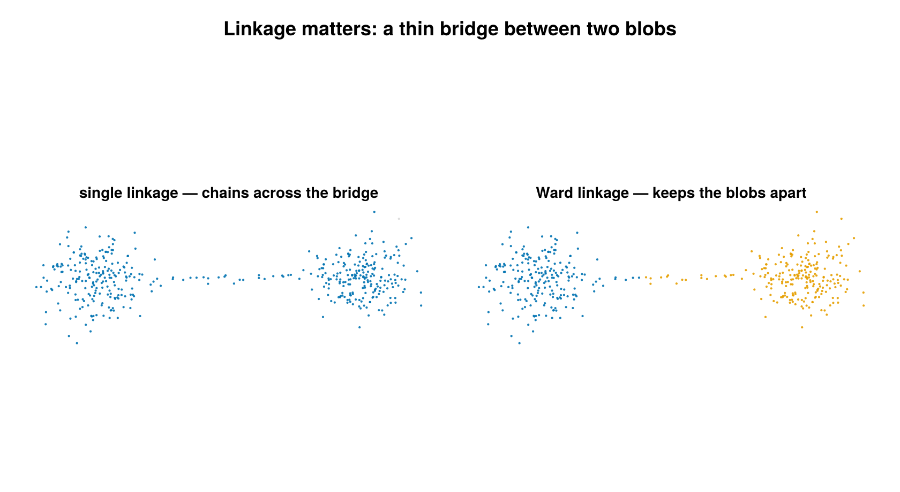

Hierarchical
Agglomerative hierarchical clustering of SMLM localizations, exposed as a cluster labeling backend through HierarchicalConfig. It is backed by Clustering.hclust + cutree: a per-group pairwise distance matrix is built, merged bottom-up into a dendrogram, then cut into flat clusters either at a height (cut_threshold) or to a fixed number of clusters (n_clusters).

Cut to two clusters on two blobs joined by a thin bridge. Single linkage chains across the bridge, so both blobs land in the same cluster (the 2-cluster cut only peels off a stray point); Ward keeps the blobs apart (right).
Concept
Agglomerative clustering starts with every localization in its own singleton cluster and repeatedly merges the two closest clusters until a single tree (the dendrogram) remains. "Closest" is defined by a linkage criterion that extends the point-to-point distance to a cluster-to-cluster distance. The backend supports four linkages:
:single— nearest-neighbor distance between the two clusters (chaining-prone, finds elongated structure).:complete— farthest-neighbor distance (compact, roughly spherical clusters).:average— mean pairwise distance between the clusters (UPGMA, a middle ground).:ward— merge the pair whose union increases total within-cluster variance the least; tends to produce balanced, compact clusters.
The dendrogram records, at every merge, the height (linkage distance) at which it happened. A flat clustering is obtained by cutting the tree: either horizontally at a chosen height — every subtree joined below that height becomes a cluster — or by requesting exactly a target number of clusters. Cutting by height answers "group everything closer than h"; cutting by count answers "give me K groups", and is the natural choice when the height has no intuitive unit.
How it works
For each group of localizations (one group per dataset when per_dataset = true, otherwise the whole SMLD), the backend:
Extracts a $d \times n$ coordinate matrix in microns ($d = 2$, or $d = 3$ when
use_3d = true).Builds the symmetric $n \times n$ Euclidean pairwise-distance matrix
\[D_{ij} = \lVert x_i - x_j \rVert_2 ,\]
so $D$ is in microns. This $O(n^2)$ matrix is the dominant cost.
Runs
Clustering.hclust(D, linkage = ...)to build the dendrogram, thenClustering.cutreeto flatten it.Relabels any cluster with fewer than
min_pointsmembers as noise (id = 0); surviving clusters are renumbered compactly $1..K$ within the group.
Linkage math
At each step the two clusters $A$ and $B$ minimizing the cluster distance $d(A, B)$ are merged. The four linkages differ only in $d(A, B)$:
\[\begin{aligned} \text{single:} &\quad d(A,B) = \min_{a \in A,\, b \in B} D_{ab} \\ \text{complete:} &\quad d(A,B) = \max_{a \in A,\, b \in B} D_{ab} \\ \text{average:} &\quad d(A,B) = \frac{1}{|A|\,|B|} \sum_{a \in A} \sum_{b \in B} D_{ab} \\ \text{ward:} &\quad d(A,B) = \sqrt{\frac{2\,|A|\,|B|}{|A| + |B|}}\; \lVert \mu_A - \mu_B \rVert_2 , \end{aligned}\]
where $\mu_A, \mu_B$ are the cluster centroids. For single/complete/average the merge height is a genuine distance (microns, inherited from $D$). For Ward the height tracks the increase in total within-cluster variance caused by the merge — a cost with units of roughly micron² rather than a distance.
The cut and its unit convention
Exactly one of cut_threshold or n_clusters controls the cut:
cut_threshold(cut by height). For the distance-based linkages (:single,:complete,:average) the value is given in nanometers and converted to microns internally before cutting, to match the micron-valued dendrogram height:\[h = \frac{\texttt{cut\_threshold}}{1000} \quad (\text{nm} \rightarrow \mu\text{m}).\]
For
:wardthe dendrogram height returned byClustering.hclustis the square root of the within-cluster variance increase (the Ward cost is computed on squared distances, then the heights are square-rooted), so it carries a distance-like (≈ µm) scale rather than a raw variance (µm²) one.cut_thresholdis passed through unchanged — there is still no simple "nm" interpretation, so because the height is hard to set by intuition,n_clustersis the clean choice for Ward.n_clusters(cut by count). Cuts the dendrogram to produce exactly that many clusters (capped at the group size), counted before themin_pointsfilter is applied. Units-agnostic, so it works the same for any linkage.
Configuration
HierarchicalConfig fields (algorithm-specific fields followed by the shared backend fields):
| field | default | unit | meaning |
|---|---|---|---|
cut_threshold | nothing | nm (distance linkages) / Ward height ≈ µm (Ward) | dendrogram cut height; converted nm→µm for :single/:complete/:average, passed through unchanged for :ward |
n_clusters | nothing | — | cut the dendrogram to exactly this many clusters (before min_points filtering) |
linkage | :ward | — | linkage criterion: :single, :complete, :average, or :ward |
min_points | 5 | count | clusters with fewer than this many members after cutting are relabeled noise (id = 0) |
use_3d | false | — | include the z-coordinate in the distance calculation (shared field) |
per_dataset | true | — | cluster within each dataset independently, so (dataset, id) is unique (shared field) |
remove_unclustered | false | — | drop noise emitters (id == 0) from the returned SMLD (shared field) |
Exactly one of cut_threshold / n_clusters must be supplied. Supplying both, or neither, raises an ArgumentError. Additional validation: cut_threshold must be > 0, n_clusters must be ≥ 1, min_points must be ≥ 1, and linkage must be one of the four supported symbols.
# Distance-based linkage: cut_threshold is in nm (converted to µm internally).
cfg = HierarchicalConfig(cut_threshold = 200.0, linkage = :single)
(smld_out, info) = cluster(smld, cfg)# Ward linkage: specify the number of clusters directly (units-agnostic).
cfg_ward = HierarchicalConfig(n_clusters = 3, linkage = :ward)
(smld_out, info) = cluster(smld, cfg_ward)Output & interpretation
cluster(smld, cfg::HierarchicalConfig) returns a (smld_out, info) tuple. The input smld is not modified — emitters are deep-copied and cluster labels are written onto the copy's emitter.id: 0 marks noise, 1..K mark distinct clusters (per-dataset when per_dataset = true). When remove_unclustered = true, noise emitters are dropped from smld_out.
The companion info is a ClusterInfo with algorithm = :hierarchical and the usual summary fields: n_locs_in, n_clustered, n_noise, n_clusters, cluster_sizes (size of each cluster, indexed by id), and elapsed_s.
(smld_out, info) = cluster(smld, HierarchicalConfig(n_clusters = 3, linkage = :ward))
info.algorithm # :hierarchical
println("$(info.n_clustered)/$(info.n_locs_in) clustered into $(info.n_clusters) clusters")Notes & caveats
- Memory / scalability. The $O(n^2)$ pairwise distance matrix is built per group, so memory grows quadratically with group size. This backend is intended for small groups; for datasets with ≫10,000 localizations per group, prefer DBSCAN.
- 2D and 3D. Both are supported; set
use_3d = trueto include the z-coordinate (requires 3D emitters with a:zproperty). - Ward unit caveat. Under
:wardthe cut height isClustering.jl's Ward height — the square root of the within-cluster variance increase (≈ µm scale), not a raw inter-point distance, and not nm-converted — socut_thresholdvalues are not comparable across linkages. When using Ward, prefern_clusters.
References
- Clustering.jl
hclust/cutreedocumentation: https://juliastats.org/Clustering.jl/stable/hclust.html - Ward, J. H. (1963). "Hierarchical Grouping to Optimize an Objective Function." Journal of the American Statistical Association, 58(301), 236–244.